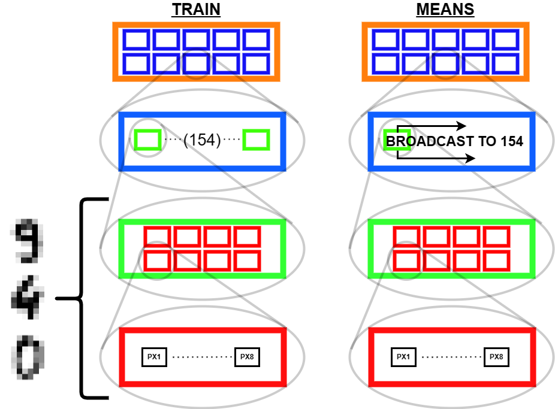

TL;DR
The best way to learn is to teach, so in this post I try to teach the reader how my first neural network implementation works! I built this in following along with the awesome lessons over at fast.ai. Many thanks to that team.
Overview
What?
We’re going to make a function that, given a picture of a numeric digit, identifes the number.
Why?
You need to crawl before you can reject unripe tomatoes1, and that before you can comfortably learn to tie a necktie while your Tesla is whipping around corners with you in the drivers seat.
Who?
Who am I!? Who are you?!
How?
Using PyTorch2, an opensource toolkit for building neural networks. Truly the shoulders of giants at our finger tips.
Code Review
Making a neural network to solve a problem is a bunch of mumbo jumbo if we’re not actually performing better than a simpler heuristic function. To test that, we will start off by constructing a simple classification that classifies a digit based on which average digit image it is nearest to (You’ll see what I mean later). Then we will build a simple neural network (not too deep, not too convolutional, just right), and try to out perform the naive function!
Let’s get into it!
The required dependencies!:scikit-learn, fastbook, matplotlib
Data Acquisition
In any real world ML application, data acquisition can be one of the more costly parts of the process, luckily not so for this simple learning example.
We’re using a variant of the classic NIST database, a collection of images of hand drawn numbers that provided the means for benchmarking in earlier days of ML.
I had trouble wrangling with the various sources for this database online, the simplest workable solution I could find for us to get a grip on these images was to just import the datasets library that comes with installing the scikit-learn package.
Pre-processing data before even touching any neural net methods can improve your final performance. Note the data set information offered at the source page:
We used preprocessing programs made available by NIST to extract normalized bitmaps of handwritten digits from a preprinted form. From a total of 43 people, 30 contributed to the training set and different 13 to the test set. 32x32 bitmaps are divided into nonoverlapping blocks of 4x4 and the number of on pixels are counted in each block. This generates an input matrix of 8x8 where each element is an integer in the range 0..16. This reduces dimensionality and gives invariance to small distortions.
Always good to get to know your data..
dict_keys(['data', 'target', 'frame', 'feature_names', 'target_names', 'images', 'DESCR'])What’s in here?
Code
(array([0, 1, 2, ..., 8, 9, 8]), '# targets: 1797')So we have 1797 numbers in this data set.
Code
([[0.0, 0.0, 5.0, 13.0, 9.0, 1.0, 0.0],
[0.0, 0.0, 13.0, 15.0, 10.0, 15.0, 5.0],
[0.0, 3.0, 15.0, 2.0, 0.0, 11.0, 8.0],
[0.0, 4.0, 12.0, 0.0, 0.0, 8.0, 8.0],
[0.0, 5.0, 8.0, 0.0, 0.0, 9.0, 8.0],
[0.0, 4.0, 11.0, 0.0, 1.0, 12.0, 7.0],
[0.0, 2.0, 14.0, 5.0, 10.0, 12.0, 0.0],
[0.0, 0.0, 6.0, 13.0, 10.0, 0.0, 0.0]],
array([[ 0., 0., 5., 13., 9., 1., 0., 0.],
[ 0., 0., 13., 15., 10., 15., 5., 0.],
[ 0., 3., 15., 2., 0., 11., 8., 0.],
[ 0., 4., 12., 0., 0., 8., 8., 0.],
[ 0., 5., 8., 0., 0., 9., 8., 0.],
[ 0., 4., 11., 0., 1., 12., 7., 0.],
[ 0., 2., 14., 5., 10., 12., 0., 0.],
[ 0., 0., 6., 13., 10., 0., 0., 0.]]))And it looks like the ‘data’ entity is a list of one dimensional vectors, listing out the 64 pixels of each image, whereas the ‘images’ entity is the same info already organized into the 8x8 array of pixels.
The values in the arrays are from 0-16, as described in the source documentation. Important to keep in mind that we might want to normalize them all to a range from 0 to 1 for our purposes. We’ll do that later.
I had to do some funny indexing to tease that out. Something I learned along the way was the fantastic .view() function of the Tensor object in pyTorch. Tensors are like a numpy array, have a lot of features that will be critical for quickly creating neural nets. This object type was imported with fastbook.
tensor([[ 0., 0., 5., 13., 9., 1., 0., 0.],
[ 0., 0., 13., 15., 10., 15., 5., 0.],
[ 0., 3., 15., 2., 0., 11., 8., 0.],
[ 0., 4., 12., 0., 0., 8., 8., 0.],
[ 0., 5., 8., 0., 0., 9., 8., 0.],
[ 0., 4., 11., 0., 1., 12., 7., 0.],
[ 0., 2., 14., 5., 10., 12., 0., 0.],
[ 0., 0., 6., 13., 10., 0., 0., 0.]])Using -1 in the argument for the view function will auto-size the tensor based on the number of elements in the array, and the other dimensions specified. This should come in handy!
For a classification task such as this, it’s important to keep in mind that our data should be balanced in quantity per class. Let’s take a look at how many we’ve got.
Code
['0: 178',
'1: 182',
'2: 177',
'3: 183',
'4: 181',
'5: 182',
'6: 181',
'7: 179',
'8: 174',
'9: 180']So, a little imbalance but nothing crazy. Worth checking though…
If we train on a million images of 7’s, and only a thousand 1’s, we can be duped into thinking we’re rocking a 0.1% error rate by a naive model that guesses ‘7’ no matter what you give it!
Picturing Inputs

Turns out that pre-processing that comes baked in does make them pretty grainy. But nothing some training can’t solve.
Bucketing Classes
We need to separate out our inputs for training purposes. We’ll iterate across the ‘targets’ list, using the target numbers themselves as the index value to dump the corresponding ‘image’ data into the storage bin.
Code
stacked = []
# This loop because stacked=[[]]*10 makes 1 list in list, with 10 copies of pointers... need separate objects
for i in range(10):
stacked.append([])
# Assign all images to the right collection in the 'stacked' list, indexed by target
for i in range(len(mnist["target"])):
stacked[mnist["target"][i]].append(mnist["images"][i])
lens = [len(stacked[i]) for i in range(10)]
lens, min(lens) # Confirm counts of samples([178, 182, 177, 183, 181, 182, 181, 179, 174, 180], 174)So that worked, we now have a list of lists of arrays, the arrays being interpreted as images, the lists being collections of images, with all images in a given collection being an image of the same hand drawn number. And we see that we have the fewest samples of numbers 8’s, so we’ll take only that many samples (174) of every other image for our dataset.
Segmentation
The next step is to define which data will be our training, and our validation set. It was important to bucket out our data first so by randomly sampling our data we didn’t generate a validation set with a large imbalance in the number of classes to be tested in it.
First we convert to a tensor, then segment training from validation data. Arbitrarily taking 20 examples from each digit, so, 11.5% of the total data set towards validation.
We’ll print out the size of these collections and take a peek at a sample to make sure we indexed right.
Code
# To make dataset a tensor, make it same number of dimensions
stacked = tensor([x[:174] for x in stacked])
# Segmentation: Pull 20 of each digit out of training set
test = [dig[-20:] for dig in stacked]
train = [dig[:-20] for dig in stacked]
# Confirm counts of samples
[len(test[i]) for i in range(10)], [len(train[i]) for i in range(10)]
show_image(stacked[3][0]) # Check sample<Axes: >Nice.
It’s important to keep track of what’s what.
(list, torch.Tensor, torch.Tensor, [list, torch.Tensor, torch.Tensor])Ok so our top level containers for training/testing data are basic python lists. Within those, we have 10 collections, one for each integer. Those are Tensors. And then, each image (a collection of pixels unto itself) within those tensors, are also Tensor type objects.
Instead of a basic Python list, we will need the top level containers as tensors to leverage the pyTorch functionality built into them. luckily it’s an easy conversion
Code
(torch.Size([10, 154, 8, 8]), torch.Size([10, 20, 8, 8]))Now here is a crtiical piece, working with multidimensional arrays and keeping in mind what we understand these to be. Our test and training tensors have the same dimensionality but not the same size.
Building Benchmark Function
Where it gets fun then is averaging and such across these dimensions. By doing so we can get the ‘average drawing of a number,’ which will be integral to creating our benchmark classification function.
The ‘Average’ Digit
Code
I hope you think this is as cool as I do! It calls to mind the idea of seeing a video of someone doing something routine every day like brushing their teeth, but at a million times speed, all the variations of movement wash out and create this somewhat blurry view of the general pattern. Like a mashing of all possible worlds. What did that code do, how did we get this? Let’s tear this one apart.
First of all, we’re dealing with a 4 dimensional tensor, train. When we jumped into a list comprehension iterating for x in train, we ‘stepped into’ that 0th dimension, so to speak. Then any given element x is a 3 dimensional tensor.
We will go through 10 of them, one for each integer, and each will contain 174 8x8 images. When we take the mean in the 0th dimension of x, we are saying “Across these 172 samples of 8x8 containers, what are the average values for element?” A visual way to think of this is that you have 174 pages, each with an 8x8 grid of numbers on it. We will reduce it to a single page by taking the average through all the pages, for each number; i.e. the 1st number on our single summary page will be the average of the 1st number from all of the 174 pages. The 2nd number will be the average of all the 2nd numbers, etc.
In practice, this means that the more samples in which a given pixel was inked, the darker that pixel will be in the average.
Least-Difference As Decision
Recall, our goal is first create a benchmark classification function that doesn’t use neural network methodologies. Now that we have the aberage, or ‘archetypal’ form of each digit, we can define a function to compare an input digit against the ideal digits to identify which it has the least difference with.
Since all of the ‘images’ we’re talking about are represented as a collection of 64 numbers, each number indicating a pixels brightness, taking the difference between two images as a whole just entails taking the difference between each pair of corresponding pixels from each, and then taking the average or using some other function to convert those 64 differences into one number.
Fortunately, the fastbook library again serves up a toolkit: the module F, containing functions we’ll need in our travels on any ML journey.
Let’s use the L1 loss and MSE as loss functions3. We’ll pass in the first example of a zero we have against the ‘average’ zero:
Code
('L1 loss: 1.9119317531585693', 'MSE Loss: 3.072631359100342')Other than validating the fact that we aren’t getting any errors due to bad inputs, this doesn’t tell us much. Generally, the MSE loss will always be greater than the L1 loss. Because loss increases exponentially with deviation from target, in principle, it is a better loss function as it will give a stronger learning signal in training; i.e. a step in the right direction will have greater effect on minimizing the loss function, at greater distance from target. But I’m getting ahead of myself here.
A more meaningful test that this is making sense would be to compare the error of a different sample digit against our ideal zero. Lets go with a seven.
Code
('L1 loss: 4.754464149475098', 'MSE Loss: 6.698919296264648')Seems about right- a random zero sample from the database has a lower measure of loss when tested against the average zero than a random seven does. Now that we know the measure is behaving, we’ll pack into a function so we can call on it and simplify our upcoming code. We’ll use the L1 norm:
I would really encourage you to simmer with the function defined in this code block and make sure you understand how it works: - We’re taking the difference of each element in each input by subtracting - We’re taking the absolute value of all those differences - We’re averaging across the last two dimensions of the tensor. Think about it… what happens if there is more than just two dimensions
Computing The Benchmark
Having the benchmark function, lets take it for a whirl. We will pass in the average digits as one tensor, and the training digits as the other. This is a critical point! A foundational strategy for the approach to neural nets is that we work with tensor-wise operations. Instead of taking the difference of one image against another, one at a time, we pass entire tensors into functions that compute across them. This becomes an absolute necessity for the sake of algorithmic and code execution efficiency.
RuntimeError: The size of tensor a (154) must match the size of tensor b (10) at non-singleton dimension 1An error! The error message points to a mismatch in the sizes of our tensors. Let’s take at these:
Right, our means contains 10 images, each 8 by 8 pixels, one image for each ‘average’ digit. Meanwhile train is storing our training data, so it has a collection of images for each digit. So the tensor has greate dimensionality because for each digit there are 154 images of 8x8 pixels.
The mnist_distance function we made subtracts every element in the input tensors, so it makes sense that there needs to be an equal number of individual elements for the computer to make sense of the instruction. When I say element in this context I mean the numeric value assigned to each pixel in each image indicating its brightness. So at first blush, we’d think we need to expand the means tensor so as to contain many copies of the each average digit.
How can we fix this? This reveals a critical lesson in the technique called broadcasting.
Broadcasting is a functionality pyTorch brings over from Numpy. From the docs:
The term broadcasting describes how NumPy treats arrays with different shapes during arithmetic operations. Subject to certain constraints, the smaller array is “broadcast” across the larger array so that they have compatible shapes. Broadcasting provides a means of vectorizing array operations so that looping occurs in C instead of Python. It does this without making needless copies of data and usually leads to efficient algorithm implementations.
Instead of using Python to make many copies of our average digits, we can just alter the structure of the tensor means in memory so as to make it compatible for computation with train. To do this, we use the unsqueeze function to add an extra dimension along which we will broadcast.
The way I look at this is nested boxes! In this diagram, the unsqueeze function added an extra layer to the nested boxes making up means.

From the bottom up (i.e. right to left of tensor indices) we have:
- A box with 8 numbers - the pixel brightness values for the 8 pixels in a single row.
- A box with 8 of the preceding boxes - one for each row of pixels making an image
- A box with 154 of the preceding boxes - In
train, the 154 different samples of hand written digits, for a given integer. Inmeans, a single box, redundant on its own, but serving as the thing to broadcast - A box (our tensor) with 10 of the preceding boxes, one for each integer
0through9
But we just asked “Which of these two is more likely to be a zero?” We haven’t really done digit classification just yet, to do that we need to compare any given test digit against the averages samples of 0 through 9 and see which yields the smallest loss measure.
Footnotes
Too fun not to share though I think this is a machine vision implementation without neural nets. Probably just averaging colour across a pixel range to trigger the paddles.↩︎
If it ain’t ‘py’, it ain’t python, right?↩︎
Check out this link for more on these norms. Be aware that MSE is just a colloquial name for the L2 norm, and also that a norm alone isn’t a ‘loss function’ per se. Any function at all is a loss function if you use it to calculate loss. That cetainly doesn’t mean it’ll be a good one. Books could be written on the topic though, so we’ll leave it there.↩︎